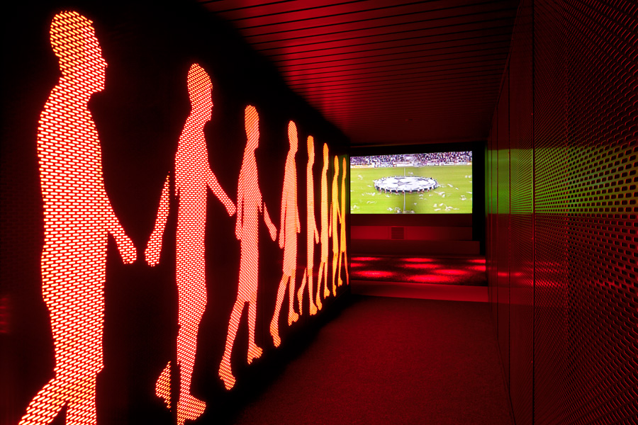

The Ajax Experience
Commissioned by the 100 year-old Ajax Amsterdam football club, Sid Lee Architecture in collaboration with gsmprjct° created a truly immersive fan experience for the legendary team.
Walking into the museum you go through the hall of “Giants" visualizing the important club members and glorious moments. Through the hall you travel into The Ajax Academy filled with multimedia rooms and interactive training areas. Once you have practiced your technique and speed hear an inspiring speech from the club’s coach and head into the stadium to hear the roar of the crowd.
Video Walkthrough & Experience
Apparently I’m a fan of Sid Lee’s work since this is the third time I have posted one of their projects. They certainly deserve the recognition. Also see Bota Bota and Redbull Amsterdam HQ.